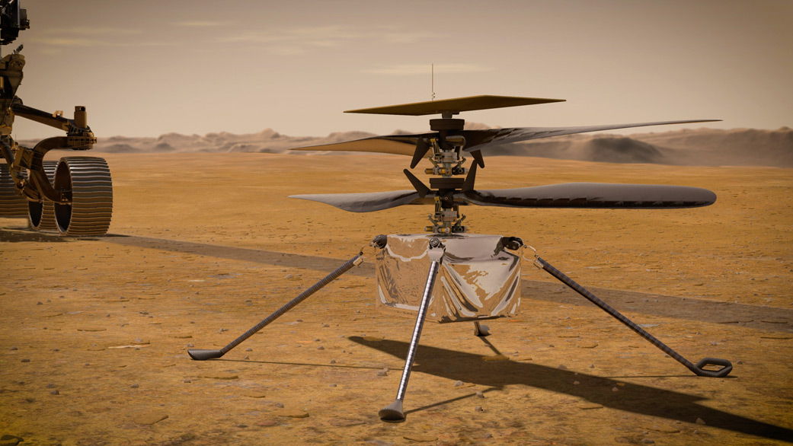

Welcome to NASA's Mars Exploration Program, where we are on an ambitious journey to uncover the mysteries of the Red Planet and pave the way for human exploration.
Here, you'll discover our plans, missions, and cutting-edge technologies that are propelling us closer to the goal of sending humans to Mars.
Mars has long captivated our imagination as the next frontier for human exploration. At NASA,
we're committed to making that dream a reality. Our mission to Mars encompasses a series of robotic missions to study the planet's atmosphere, geology, and potential for life, as well as preparations for crewed missions in the future.
Mars Perseverance Rover: Explore the latest mission to Mars with the Perseverance Rover, which landed on the Martian surface in February 2021.
Perseverance is searching for signs of past microbial life, collecting samples for future return to Earth, and testing technologies for future human exploration.
Mars Ingenuity Helicopter: Explore the groundbreaking Ingenuity helicopter, which made history as the first powered flight on another planet, demonstrating the potential for aerial exploration of Mars.
Artemis Program: Delve into NASA's Artemis program, which aims to return humans to the Moon by 2024 and establish a sustainable lunar presence as a stepping stone for future Mars missions. Mars Sample Return: Learn about our plans to retrieve the samples collected by the Perseverance Rover and return them to Earth, where they will be analyzed for signs of past life and geological history. Human Exploration: Discover how NASA is developing the technologies, spacecraft, and infrastructure needed to send astronauts to Mars in the coming decades, including habitats, propulsion systems, and life support systems.